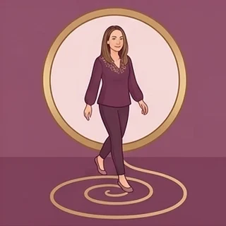

Le Cercle · ton suivi
Sortir de ta boucle, une semaine à la fois
Un bilan de départ pour voir où tu en es, puis chaque mois une étape de la méthode des deux cycles : quatre semaines d'exercices concrets, un journal que toi seule peux lire, et un bilan pour mesurer le chemin parcouru.

Une semaine à la fois. Pas besoin d'aller vite : chaque petit geste compte.
Chargement de ton suivi…
Comment sortir de ses schémas répétitifs ?
Tu as peut-être déjà remarqué que certaines situations reviennent dans ta vie sous des visages différents : le même type de relation, le même conflit au travail, la même peur de manquer alors que tout va bien. Comprendre d'où vient une répétition est une première étape, mais rarement la dernière. On peut savoir très bien pourquoi on réagit d'une certaine façon, et continuer à le faire. Sortir d'un schéma demande du temps, de l'attention et des gestes répétés, semaine après semaine.
Pourquoi une répétition revient
Un schéma se rejoue souvent parce qu'il a été utile un jour. Se méfier, tout contrôler, s'effacer, donner sans compter : ces réactions ont parfois protégé un enfant, ou une génération entière. Elles deviennent une boucle quand elles continuent alors que la situation a changé. Il arrive aussi qu'on rejoue, sans le savoir, une histoire de sa famille : un départ, une perte, une loyauté envers quelqu'un qui n'a pas pu vivre autrement.
Les deux cycles : la racine, puis le cœur
Le suivi s'appuie sur la méthode des deux cycles. Le premier cycle, la racine, concerne la sécurité : avoir sa place, un toit, de quoi vivre, le droit d'exister. Tu peux le reconnaître si tu travailles sans jamais te sentir à l'abri, ou si demander quelque chose te coûte énormément. Le second cycle, le cœur, concerne ta façon d'aimer et d'être aimé·e : la peur d'être quitté·e, le besoin d'être choisi·e, la tendance à trop donner. On commence en général par la racine, parce qu'il est difficile d'aimer librement tant qu'on ne se sent pas en sécurité.
Concrètement, chaque mois correspond à une étape. Pendant quatre semaines, tu reçois un exercice court : observer à quel moment une réaction se déclenche, écrire la phrase intérieure qui l'accompagne, essayer une petite réponse différente, puis faire le point. Ton journal te sert à noter ce que tu remarques, sans te corriger. Tu le relis au bout de quelques semaines, et souvent tu vois un changement que tu n'avais pas perçu au jour le jour.
Le but n'est pas que le thème disparaisse. Il peut revenir, mais tu le reconnais plus vite, tu réagis autrement, et la boucle devient une spirale. Si tes répétitions se jouent surtout dans le couple, tu peux aussi lire la page consacrée aux schémas répétitifs en amour. Le bilan de départ, puis les bilans réguliers, te permettent de mesurer le chemin parcouru avec des repères concrets plutôt qu'avec une impression.
Questions fréquentes
Pourquoi reproduit-on toujours les mêmes schémas ?
Parce qu'un schéma connu rassure, même quand il fait souffrir. Il s'est souvent mis en place pour protéger, dans l'enfance ou dans l'histoire familiale, et il continue par habitude. Tant qu'on ne repère pas le moment précis où il se déclenche, on réagit en automatique. L'observer, le nommer et essayer une autre réponse permet peu à peu de le transformer.
Combien de temps faut-il pour sortir d'un schéma répétitif ?
Il n'existe pas de durée fixe. Certaines étapes se traversent en quelques semaines, d'autres demandent des mois. Ce qui compte, c'est la régularité : un petit exercice chaque semaine apporte souvent plus qu'une grande prise de conscience isolée. Le premier signe de progrès est généralement de reconnaître le schéma plus tôt, avant qu'il ne se déroule entièrement.
Comment savoir si mon schéma touche la sécurité ou l'amour ?
Regarde la peur qui se cache derrière. Si elle concerne le manque, la place, l'argent, le fait d'être en danger ou de ne pas avoir le droit d'être là, c'est plutôt la racine. Si elle concerne le fait d'être quitté·e, pas assez aimé·e ou pas choisi·e, c'est plutôt le cœur. Le bilan de départ t'aide à le repérer.